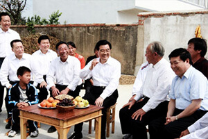

1978年冬夜，小岗村冒着巨大风险，率先包产到户，轰轰烈烈的大包干开始了。“一年翻身，改变面貌”，小岗村，迈出了中国巨变的第一步！
大包干后，中国在农村改革成功的基础上，开始了以城市为重点的全面经济体制改革，综合国力不断增强，世界影响力连年攀升，中国现代化的进程从此步入了历史快车道。
三十多年来，中央、省、市、县各级党委政府对小岗的发展十分关心和支持，各级领导多次到小岗视察工作。
小岗村，携着上级领导的殷切关怀，汇聚着全中国关注的目光，高举改革创新的大旗，奋勇向前，谱写出一曲曲新时代的动人乐章。
-
这是安徽省凤阳县小岗村18位农民按下红手印的“包产到户”契约（资料照片）。家庭联产承包责任制是中国农民的伟大创造。详细
-
尽管自然条件并无优势，但小岗人多年来从没停止过向富裕路的摸索，他们骨子里，是有着一股求变、敢为人先的基因的。况且，小岗村“中国改革开放第一村”的身份，也为他们的发展带来不少机遇。详细
-
这18位被称为“大包干”带头人的农民是：关延珠、严立富、严立华、严立坤、严金昌、严家芝、严学昌、严立学、严俊昌、严美昌、严宏昌、严付昌、严家其、严国品、关友生、关友章、关友江、韩国云。详细
-
1998年，江泽民总书记在视察安徽凤阳小岗村时指出，以家庭承包经营为基础的双层经营体制，是党的农村政策的基石，这一政策要长期坚持下去，是不会改变的。土地承包关系“30年不变，30年后更没有必要变”。详细
-

9月30日，中共中央总书记、国家主席、中央军委主席胡锦涛到安徽农村考察。这是胡锦涛在滁州市凤阳县小岗村村民关友江家院子里同村民们亲切交谈，共商农村改革发展大计。详细
-
近年来，在新农村建设中，小岗村重振改革创新的“大包干”精神，根据自身特点，开始探索发展多种形式的土地规模经营，探索出了一条“现代农业——旅游产业——工农业协调发展”改革致富之路。详细
2004年2月，小岗人迎来了他们的第一书记——沈浩同志。
作为小岗崛起的引路人，沈浩书记带领着小岗人，确定了“开发现代农业、发展旅游业、招商引资发展村级工业”的“三步走”发展战略，一步一个脚印，踏出了属于小岗特色的发展之路。
2006年11月，第一个三年任期届满，98颗红手印留住了沈浩，留住了小岗人渴盼未来的希望；2009年9月，第二个三年任期即将结束时，186颗红手印再次留住沈浩，留住了小岗人奔向未来的梦。他以忠诚和大爱，以创新和奋斗，以青春和生命，抒写了当代中国农村优秀基层干部的先进事迹和崇高精神。
然而，誓言永远为小岗奉献的沈浩书记，却因为积劳成疾，病逝在自己的工作岗位上。历史定格在了2009年11月7日，这一天，小岗人印下第三纸红手印，要永远地留下书记的忠诚灵魂。小岗村永远铭记着沈浩书记，沈浩也看到了小岗人天高地厚的深情。
-
他立党为公、执政为民，与人民群众同呼吸、共命运、心连心，带领乡亲们求富裕、奔小康，奉献了青春，甚至生命。小岗人用红手印，表达了对这位“第一书记”的爱戴。详细
-
10年前，作为安徽省财政厅的选派干部，39岁的沈浩来到小岗村这片厚重的土地，担任村党支部第一书记。他用一腔热血激活了小岗村一潭春水，直至2009年11月6日，疲倦的沈浩睡下后再没有醒来……详细
-
党的好干部、深受小岗群众爱戴的好书记沈浩同志，离开我们已有一年时间。一年来，安徽各级党组织积极响应中央号召，认真开展向沈浩同志学习活动，追忆他的模范事迹，缅怀他的高尚品质。详细
按照 “现代农业的示范村、城乡统筹的先行村、制度创新的实验村、文明和谐的新农村”四型村战略目标，小岗村，正从深藏不露的山村巨变中大度走出，筑起一条创新跨越之路。
小岗村积极调整产业结构，发展现代农业，编制出《小岗村现代农业示范区规划》，通过实施土地流转和开展土地确权登记，在确保农户收益得到保障的基础上，对农村土地积极探索新模式经营和管理，发展现代化、集约化、规模化的高效农业。葡萄、大樱桃、蓝莓、黑豆等优质高产粮食作物遍地开花，现代化温室大棚、连体式大棚等设施农业蓬勃发展。
通过招商引资延伸农业产业化链条，发展农产品深加工业，宝迪10万头原种猪养殖基地落户小岗，构建从原种猪养殖、育肥、屠宰、肉食品加工和销售的产业链条。金小岗农林科技产业园迅速推进，中航郑飞小岗面业、GLG科技产业园等企业蓄势待发。
小岗村以“大包干”纪念馆和沈浩同志先进事迹陈列馆为依托，利用自身品牌优势，积极发展红色旅游、现代农业观光游和乡村风情游。
现在的小岗村，已成为一个拥有23个村民组，人口近4000人，占地2.25万亩的中心村。小岗，正成为投资兴业的热土，企业集聚的领地。
经济繁荣、生活富裕、环境优美、民主和谐。小岗努力打造安徽省乃至中国的美好乡村示范村，高起点规划、高质量建设现代农业示范园，全力争创“全国干部教训培训基地”。
在建设宜居、宜业、宜游美好乡村的同时，小岗深入挖掘凤阳花鼓、杈拉机、钱杆子、花棍等民俗文化，以改革创新文化为重点、以地方民俗文化为补充，全面增强文化软实力。
小岗村在村两委引导、指导下，以村民理事会为主体，实现自我管理、自我服务、自我监督为核心的村民自治；建立在村党委领导下，以制度建设为主要内容，村企一体的现代管理与服务群众的新机制，努力构建民主、和谐、服务、共进的新型社会化关系。
小岗村站在新的历史起点上，以海纳百川的广阔胸襟面向未来，迎接机遇与挑战，全面建设富强、民主、文明、和谐的新小岗。
小岗人敢想、敢干、敢为人先的精神，以其鲜明的朝代特征，同延安精神、井冈山精神一样，成为中国最宝贵的精神财富，永远激励着人们奋勇前进！小岗人将继续弘扬大包干精神和沈浩精神，坚持与时俱进、着力发展、以人为本、促进和谐，坚定不移地沿着改革开放的伟大道路走下去，为全面建成小康社会而努力奋斗。(陈友田）